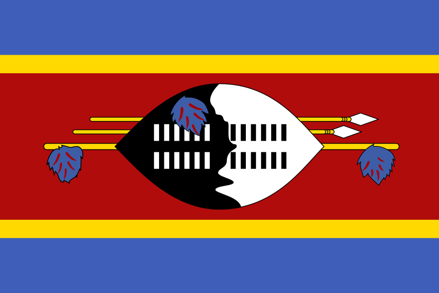

Lethukuthula Dlamini
About Me
Hello! My name is Lethukuthula Dlamini, and I was born in Mbabane, the capital city of Eswatini. I am passionate about technology, creativity, and continuous learning. I enjoy content creation, especially making vlogs where I can express my creativity and share experiences with others. Outside my studies, I also work as my dad's personal assistant (PA). This role gives me practical experience in administration, organization, communication, and handling responsibilities. I am currently developing my skills in web development and programming, with the goal of pursuing a career in software development.
Mbabane, Eswatini

Eswatini is a beautiful landlocked country in Southern Africa. It is known for its rich cultural heritage, beautiful landscapes, and vibrant traditions. Its capital city is Mbabane.